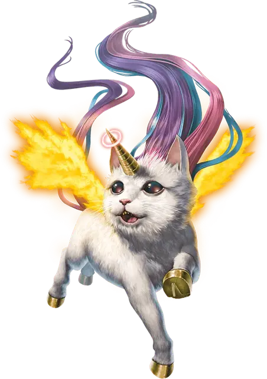

Дождь
Rain
Маленький Небожитель, законно-добрый, именной НИП

Класс Доспеха 15 (природный доспех)
Хиты 60 (11к6 + 22)
Скорость 30 футов, летая 120 футов
| мод | спас | ||
|---|---|---|---|
| СИЛ | 10 | +0 | +0 |
| ЛОВ | 11 | +0 | +3 |
| ТЕЛ | 14 | +2 | +5 |
| мод | спас | ||
|---|---|---|---|
| ИНТ | 14 | +2 | +2 |
| МДР | 18 | +4 | +7 |
| ХАР | 15 | +2 | +2 |
Навыки Акробатика +3, Проницательность +7, Скрытность +3
Сопротивление урону дробящий, колющий, рубящий от немагических атак
Иммунитет к урону излучение, огонь, яд
Иммунитет к состояниям отравление, очарование, паралич
Чувства пассивное Восприятие 14
Языки Общий, Небесный
Опасность 5 (1800 опыта)
Бонус мастерства +3
Особенности
Пламенные крылья. Крылья Дождя сделаны из пламени, они испускают яркий свет в пределах 15 футов и тусклый свет в пределах ещё 15 футов. В начале каждого хода Дождя, каждое существо по выбору Дождя в пределах 5 футов от неё получает 3 (1к6) урона огнём. Существо попадающее по Дождю рукопашной атакой получает 3 (1к6) урона огнём.
Сопротивление магии. Дождь совершает с преимуществом спасброски против заклинаний и магических эффектов.
Действия
Мультиатака. Дождь совершает две атаки Копытами.
Копыто. Рукопашная атака оружием: +3 к попаданию, досягаемость 5 футов, одна цель. Попадание: 5 (2к4) дробящего урона.
Вспышка рога с нимбом (перезарядка 5-6). Дождь использует свой рог с нимбом, чтобы произвести один из следующих магических эффектов:
Блестящий шторм. Дождь испускает радужный луч линией длиной 30 футов и шириной 5 футов. Каждое существо в этой области должно совершить спасбросок Ловкости Сл 15, получая 21 (6к6) урона излучением в случае провала и половину этого урона в случае успеха; существа с злым мировоззрением совершают этот спасбросок с помехой. Если урон от этого эффекта понизит хиты существа до 0, оно умирает и его тело превращается в блестящие цветы.
Исцеляющие радуги. Дождь выпускает волну омолаживающего разноцветного света в 30-футовом конусе. Каждое существо по выбору Дождя в этой области восстанавливает 18 (4к8) хитов.
Бонусные действия
Ловкий побег. Дождь совершает действие «Отход» или действие «Засада».
Описание
Дождь живет в счастливых лугах на вершине облаков, вдали от всего мирового зла. Она обожает кексы и охотно принимает их в подарок. У неё огненные крылья и маленький нимб вокруг кончика рога. Когда ей противостоят хулиганы или негодяи, она может излучать положительную энергию радужного цвета из своего рога с нимбом. Дождь использует свою радугу, чтобы исцелять дружественных существ и наказывать злодеев, превращая последних в сверкающие цветы.